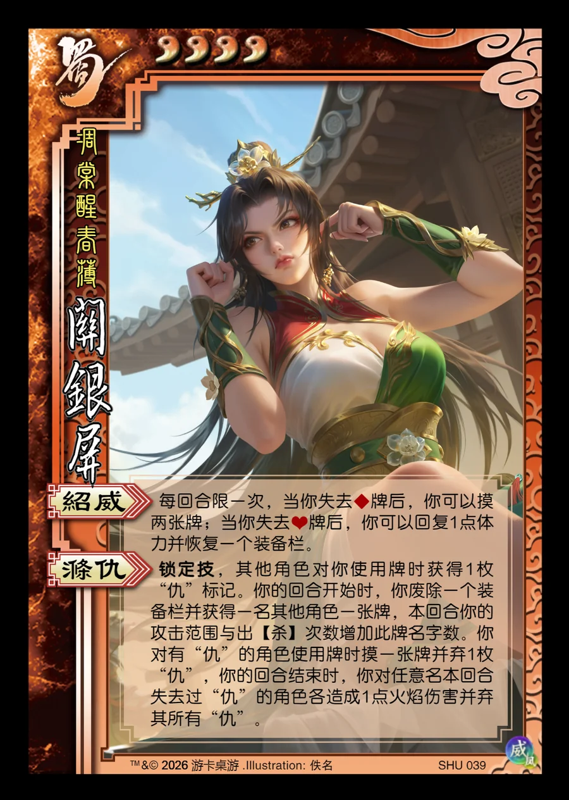

点击卡面查看大图
蜀
威关银屏
♥4凋棠醒春薄
绍威
每回合限一次，当你失去♦牌后，你可以摸两张牌；当你失去♥牌后，你可以回复1点体力并恢复一个装备栏。
涤仇锁定技
锁定技，其他角色对你使用牌时获得1枚“仇”标记。你的回合开始时，你废除一个装备栏并获得一名其他角色一张牌，本回合你的攻击范围与出【杀】次数增加此牌名字数。你对有“仇”的角色使用牌时摸一张牌并弃1枚“仇”，你的回合结束时，你对任意名本回合失去过“仇”的角色各造成1点火焰伤害并弃其所有“仇”。